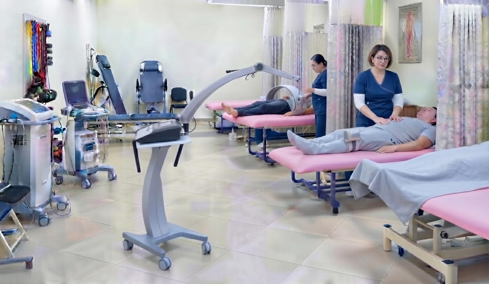
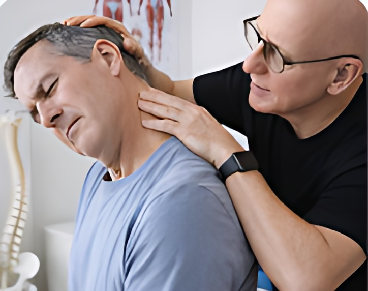
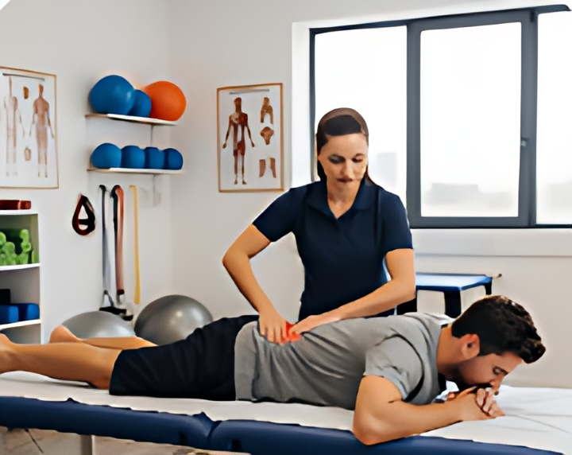
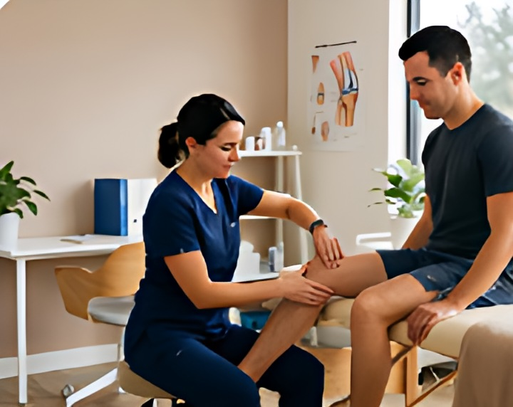
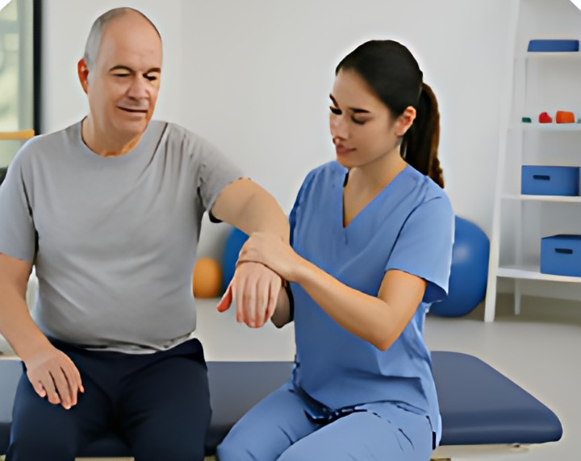
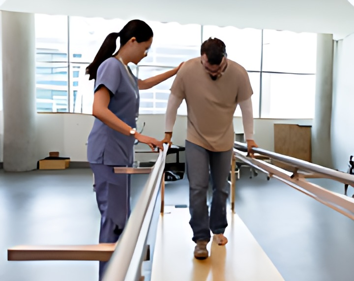

01
Електротерапија
Заблажување на болка, стимулирање на циркулацијата и мускулна релаксација.

Специјалистичка ординација
за физикална терапија и рехабилитација
Повеќе од 20 години искуство во рехабилитација, третман на болка и оспособување. Посветена грижа за вашето здравје со најсовремени методи.
Кога болката ви го отежнува секојдневието,
важно е да го откриете вистинскиот пристап.

Тешко да вртите главата
или чувствувате затегнатост во рамената?

Ве пресекува во половината
или болката се спушта по нозете?

Ви пречат одењето, скалите или станувањето?
Чувствувате затегнатост,
грчеви или болка при движење?

Ви трнат рацете или нозете,
чувствувате пецкање или жарење?

Сè уште не сте ја вратиле подвижноста
по повреда или операција?
Посебна страница со медицински називи и категории на дијагнози.
Од првиот разговор до завршната контрола, знаете што ве очекува во секоја фаза.
Добивате упат за преглед кај физијатар.
Телефонски нѐ контактирате за да потврдиме датум и час за првиот преглед.
Докторот ја разгледува вкупната состојба и медицинската документација.
По потреба се прават дополнителни иследувања, а потоа се одредува соодветната терапија.
Терапијата најчесто трае 5–10 дена, според индивидуалните потреби.
По завршувањето на терапијата се врши контролен преглед.
Добивате упат за преглед кај физијатар.
Телефонски нѐ контактирате за да потврдиме датум и час за првиот преглед.
Докторот ја разгледува вкупната состојба и медицинската документација.
По потреба се прават дополнителни иследувања, а потоа се одредува соодветната терапија.
Терапијата најчесто трае 5–10 дена, според индивидуалните потреби.
По завршувањето на терапијата се врши контролен преглед.
Јавете се и дознајте како да го направите првиот чекор.
Специјалистичка ординација за физикална терапија и рехабилитација, со голем успех од почетокот на 2006 година.
Повеќе од 20 години искуство во рехабилитација, третман на болка и оспособување. Посветена грижа за вашето здравје со најсовремени методи.
Современи физикални терапии за брзо заздравување
Заблажување на болка, стимулирање на циркулацијата и мускулна релаксација.
Ултразвучна терапија за длабинско третирање на ткивата и воспаленијата.
Брза регенерација на клетката и намалување на отоци и акутна болка.
Побрзо зараснување на коски и зглобови со помош на магнетно поле.
Применуваме современи методи и персонализиран пристап за секој пациент.
Повелете, посетете не. Ние постоиме за Вас.